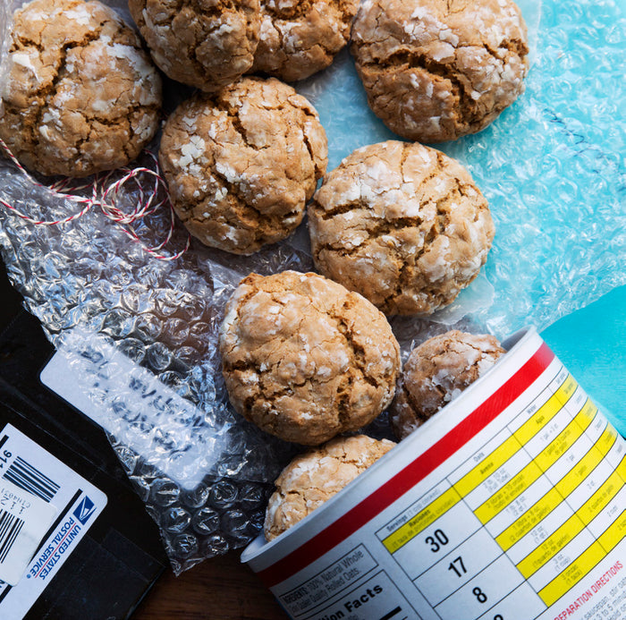

Oatmeal Cookies! - courtesy of Milk Bar

Description
This is an oatmeal cookie recipe I found on the Milk Bar website.
You can find the link to the real recipe at Milk Bar link
This recipe will make about 2 dozen cookies.
Ingredients
- 14 tablespoons butter (1 stick + 6 tablespoons) butter, softened
- 3/4 cup light brown sugar
- 1/2 cup sugar
- 2 eggs
- 2 teaspoons vanilla extract
- 2 cups flour
- 2 1/4 cup old fashioned oats
- 1 teaspoon kosher salt
- 1 teaspoon ground cinnamon
- 1 teaspoon baking soda
- 1 cup powdered sugar
Steps
- Heat the Oven to 375 F
- In a large bowl, mix together butter and sugars until well combined. Add in eggs and vanilla and mix to combine.
- Add in the dry ingredients and mix until just combined.
- Scoop and roll the dough into golf-ball sized balls, roll in powdered sugar and place on a greased baking sheet 2-inches apart.
- Bake for 9 minutes until they puff, crackle and spread with a golden brown edge.
- Enjoy immediately or store in an airtight container